전자기사 (2014-05-25 기출문제)
1과목: 전기자기학
1. 반지름이 0.01[m]인 구도체를 접지시키고 중심으로부터 0.1[m]의 거리에 10[μC]의 점전하를 놓았다. 구도체에 유도된 총 전하량은 몇 인가 [C]인가?
- 0
- -1
- -10
- 10
(정답률: 28%)

2. 그림과 같은 손실 유전체에서 전원의 양극 사이에 채워진 동축케이블의 전력손실은 몇 [W]인가? (단, 모든 단위는 MKS 유리화 단위이며, σ는 매질의 도전율[S/m]이라 한다.)
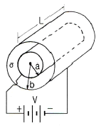
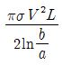
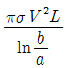
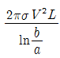
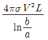
(정답률: 67%)
3. 어떤 공간의 비유전율은 2이고, 전위 V(x, y)=1/x+2xy2이라고 할 때, 점 (1/2, 2)에서의 전하밀도(ρ)는 약 몇 [pC/m3]인가?
- -20
- -40
- -160
- -320
(정답률: 19%)
4. 자기인덕턴스 L[H]인 코일에 I[A]의 전류를 흘렸을 때 코일에 축적되는 에너지 W[J]와 전류 I[A] 사이의 관계를 그래프로 표시하면 어떤 모양이 되는가?
- 포물선
- 직선
- 원
- 타원
(정답률: 70%)
5. 전기력선의 성질로서 틀린 것은?
- 전하가 없는 곳에서 전기력선의 발생, 소멸이 없다.
- 전기력선은 그 자신만으로 폐곡선이 되는 일은 없다.
- 전기력선은 등전위면과 수직이다.
- 전기력선은 도체내부에 존재한다.
(정답률: 67%)
6. 구도체에 50[μC]의 전하가 있다. 이때의 전위가 10[V]이면 도체의 정전용량은 몇 [μF]인가?
- 3
- 4
- 5
- 6
(정답률: 77%)
7. 내부장치 또는 공간을 물질로 포위시켜 외부 자계의 영향을 차폐시키는 방식을 자기차폐라 한다. 다음 중 자기차폐에 가장 좋은 것은?
- 강자성체 중에서 비투자율이 큰 물질
- 강자성체 중에서 비투자율이 작은 물질
- 비투자율이 1보다 작은 역자성체
- 비투자율이 관계없이 물질의 두께에만 관계되므로 되도록이면 두꺼운 물질
(정답률: 50%)
8. 공기콘덴서의 고정 전극판 A와 가동 전극판 B간의 간격이 d=1[mm]이고 전계는 극면간에서만 균등하다고 하면 정전용량은 몇 [μF]인가? (단, 전극판의 상대되는 부분의 면적은 S[m2]라 한다.)
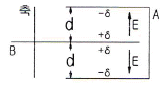
- S/9π
- S/18π
- S/36π
- S/72π
(정답률: 31%)
9. 단면적 4[cm2]의 철심에 6×10-4[Wb]의 자속을 통하게 하려면 2800[AT/m]의 자계가 필요하다. 이 철심의 비투자율은?
- 43
- 75
- 324
- 426
(정답률: 55%)
10. 정전용량 0.06[μF]의 평행판 공기콘덴서가 있다. 전극판 간격의 1/2 두께의 유리판을 전극에 평행하게 넣으면 공기부분의 정전용량과 유리판 부분의 정전용량을 직렬로 접속한 콘덴서가 된다. 유리의 비유전율을 εs=5라 할 때 새로운 콘덴서의 정전용량은 몇 [μF]인가?
- 0.01
- 0.⑤
- 0.1
- 0.5
(정답률: 54%)
11. 무한장 솔레노이드의 외부 자계에 대한 설명 중 옳은 것은?
- 솔레노이드 내부의 자계와 같은 자계가 존재한다.
- 1/2π의 배수가 되는 자계가 존재한다.
- 솔레노이드 외부에는 자계가 존재하지 않는다.
- 권회수에 비례하는 자계가 존재한다.
(정답률: 알수없음)
12. 자속밀도 10[Wb/m2] 자계 중에 10[cm] 도체를 자계와 30°의 각도로 30[m/s]로 움직일 때, 도체에 유기되는 기전력은 몇 [V]인가?
- 15
- 15√3
- 1500
- 1500√3
(정답률: 58%)
13. 진공 중에서 e[C]의 전하가 B[Wb/m2]의 자계 안에서 자계와 수직방향으로 v[m/s]의 속도로 움직일 때 받는 힘(N)은?
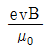
- μ0evB
- evB
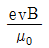
(정답률: 34%)
14. 맥스웰의 방정식과 연관이 없는 것은?
- 패러데이 법칙
- 쿨롱의 법칙
- 스토크의 법칙
- 가우스 정리
(정답률: 70%)
15. 두 유전체의 경계면에 대한 설명 중 옳은 것은?
- 두 유전체의 경계면에 전계가 수직으로 입사하면 두 유전체내의 전계의 세기는 같다.
- 유전율이 작은 쪽에서 큰 쪽으로 전계가 입사할 때 입사각은 굴절각보다. 크다.
- 경계면에서 정전력은 전계가 경계면에 수직으로 입사할 때 유전율이 큰 쪽에서 작은 쪽으로 작용한다.
- 유전율이 큰 쪽에서 작은 쪽으로 전계가 경계면에 수직으로 입사할 때 유전율이 작은 쪽의 전계의 세기가 작아진다.
(정답률: 54%)
16. 규소강판과 같은 자심재료의 히스테리시스 곡선의 특징은?
- 히스테리시스 곡선의 면적이 적은 것이 좋다.
- 보자력이 큰 것이 좋다.
- 보자력과 잔류자기가 모두 큰 것이 좋다.
- 히스테리시스 곡선의 면적이 큰 것이 좋다.
(정답률: 42%)
17. 전자파가 유전율과 투자율이 각각 ε1과 μ1인 매질에서 ε2와 μ2인 매질에 수직으로 입사할 경우, 입사전계 E1과 입사자계 H1에 비하여 투과전계 E2와 투과자계 H2의 크기는 각각 어떻게 되는가?
- E2, H2 모두 E1, H1에 비하여 크다.
- E2, H2 모두 E1, H1에 비하여 적다.
- E2는 E1에 비하여 크고, H2는 H1에 비하여 적다.
- E2는 E1에 비하여 적고, H2는 H1에 비하여 크다.
(정답률: 28%)
18. 전자계에 대한 맥스웰의 기본 이론이 아닌 것은?
- 전하에서 전속선이 발산된다.
- 고립된 자극은 존재하지 않는다.
- 변위전류는 자계를 발생하지 않는다.
- 자계의 시간적 변화에 따라 전계의 회전이 생긴다.
(정답률: 75%)
19. 자유공간에서 정육각형의 꼭짓점에 동량, 동질의 점전하 Q가 각각 놓여 있을 때 정육각형 한 변의 길이가 a라 하면 정육각형 중심의 전계의 세기는?
- Q/4πЄ0a2
- 3Q/2πЄ0a2
- 6Q
- 0
(정답률: 알수없음)
20. 전류 I[A]가 흐르고 있는 무한 직선 도체로부터 r[m]만큼 떨어진 점의 자계의 크기는 2R[M]만큼 떨어진 점의 자계의 크기는 몇 배인가?
- 0.5
- 1
- 2
- 4
(정답률: 54%)
2과목: 회로이론
21. 다음 그림과 같은 이상 변압기의 권선비는?
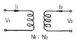
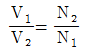
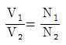
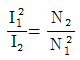
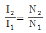
(정답률: 58%)
22. 무부하 전압이 220[V]이고 정격 전압이 200[V], 정격 출력이 5[kW]인 직류발전기의 내부저항은?
- 0.2[Ω]
- 0.4[Ω]
- 0.6[Ω]
- 0.8[Ω]
(정답률: 29%)
23. 그림과 같은 주기성을 갖는 구형파 교류 전류의 실효치는?
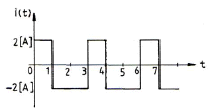
- √2[A]
- 2[A]
- 3[A]
- 4[A]
(정답률: 28%)
24. 그림의 회로가 정저항 회로가 되려면 L은 몇 [H]인가? (단, R=20[Ω], C=200[μF]이다.)
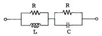
- 0.08
- 0.8
- 1
- 10
(정답률: 54%)
25. 역률 80[%], 부하의 유효전력이 80[kW]이면 무효전력은?
- 20[kVar]
- 40[kVar]
- 60[kVar]
- 80[kVar]
(정답률: 47%)
26. 권선비 n:1인 결합회로에서 구동 임피던스는?
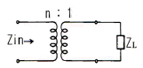
- Zin = nZL
- Zin = n2ZL
- Zin = n2/ZL
- Zin = n/ZL
(정답률: 64%)
27. 다음 신호
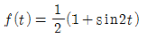
에 대한 라플라스 변환은?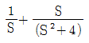
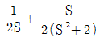
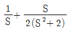
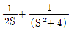
(정답률: 46%)
28. 다음을 역 Laplace로 변환하면?
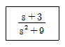
- cos3t
- sin3t
- sin9t + cos9t
- sin3t + cos3t
(정답률: 59%)
29. 어떤 회로의 피상전력이 20[kVA]이고 유효전력이 15[kW]일 때 이 회로의 역률은?
- 0.9
- 0.75
- 0.6
- 0.45
(정답률: 75%)
30. R-L-C 직렬회로에 대하여, 임의 주파수를 인가하였을 때 회로의 특성이 공진 회로의 특성으로 나타났다. 동일한 이 회로에 대하여 주파수를 증가시켰을 때, 주파수에 따른 회로의 특성으로 옳은 것은?
- 공진 회로의 특성으로 나타난다.
- 용량성 회로의 특성으로 나타난다.
- 저항성 회로의 특성으로 나타난다.
- 유도성 회로의 특성으로 나타난다.
(정답률: 70%)
31. 단위 임펄스 δ(t)의 라플라스 변환은?
- 1
- 1/S
- S
- 1/S2
(정답률: 50%)
32.
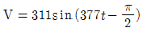
인 파형의 주파수는 약 얼마인가?- 60[Hz]
- 120[Hz]
- 311[Hz]
- 377[Hz]
(정답률: 42%)
33. 원점을 지나지 않는 원의 역 궤적은?
- 원점을 지나는 원
- 원점을 지나는 직선
- 원점을 지나지 않는 원
- 원점을 지나지 않는 직선
(정답률: 28%)
34. 시정수 τ를 갖는 R-L 직렬 회로에 직류 전압을 인가할 때 t=2τ가 되는 시간에 회로에 흐르는 전류는 최종값의 몇 [%]가 되는가?
- 86[%]
- 73[%]
- 95[%]
- 100[%]
(정답률: 67%)
35. 공급 전압이 100[V]이고, 회로에 전류가 10[A]가 흐른다고 할 때 이 회로의 유효전력은 몇 [W]인가? (단, 전압과 전류의 위상차는 30°이다.)
- 125√3[W]
- 245√3[W]
- 500√3[W]
- 750√3[W]
(정답률: 50%)
36. R-L-C 직렬회로에서 과도현상의 진동이 일어나지 않을 조건은?
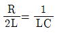
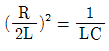
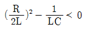
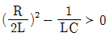
(정답률: 47%)
37. RC 직렬회로에서 t=RC일 때 콘덴서 방전 전압은 충전 전압의 약 몇 [%]가 되는가?
- 13.5
- 36.7
- 63.3
- 86.5
(정답률: 28%)
38. R=80[Ω], XL=60[Ω]인 R-L 병렬회로에 V=220∠45°[V]의 전압을 가했을 때 코일 L에 흐르는 전류는?(오류 신고가 접수된 문제입니다. 반드시 정답과 해설을 확인하시기 바랍니다.)
- 36.7∠45°[A]
- 5.75∠90°[A]
- 36.7∠-45°[A]
- 5.75∠-90°[A]
(정답률: 37%)
39. 그림과 같은 4단자 회로망에서 출력측을 개방하니 V1=15, I1=2, V2=5이고, 출력측을 단락하니 V1=18, I1=6, I2=3이었다. A, B, C, D는?
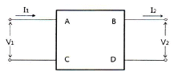
- A=3, B=8, C=0.5, D=2
- A=2, B=3, C=8, D=0.5
- A=3, B=6, C=0.4, D=2
- A=0.5, B=2, C=3, D=8
(정답률: 60%)
40. 다음 그림의 브리지가 평형 상태라면 C1의 값은?
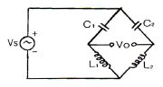
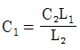
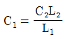
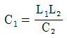
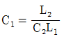
(정답률: 31%)
3과목: 전자회로
41. 다음 정전압회로에서 입력전압이 18[V], 제너전압이 10[V], 제너 다이오드에 흐르는 전류가 25[mA], 부하저항이 100[Ω]일 때 저항 R1의 값은?
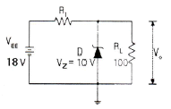
- 20[Ω]
- 64[Ω]
- 126[Ω]
- 200[Ω]
(정답률: 54%)
42. IDSS = 25[mA], VGS(off) = 15[V]인 P 채널 JFET가 자기바이어스 되는데 필요한 Rs 값은 약 몇 [Ω]인가? (단, VGS = 5[V]이다.)
- 100[Ω]
- 270[Ω]
- 450[Ω]
- 510[Ω]
(정답률: 34%)
43. B급 전력 증폭기의 최대 컬렉터 효율[%]은 얼마인가?
- 28.5[%]
- 58.5[%]
- 78.5[%]
- 98.5[%]
(정답률: 58%)
44. 다음과 같은 회로 입력에 정현파를 인가하였을 때 출력파형으로 가장 적합한 것은? (단, ZD는 이상적인 제너다이오드이다.)
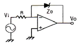
- 구형파형
- 여현파형
- 삼각파형
- 톱니파형
(정답률: 62%)
45. 다음 중 부궤환에 의한 출력임피던스 변화에 대한 설명으로 옳은 것은?
- 전압 직렬 궤환시 출력임피던스는 증가한다.
- 전압 병렬 궤환시 출력임피던스는 증가한다.
- 전류 직렬 궤환시 출력임피던스는 감소한다.
- 전류 병렬 궤환시 출력임피던스는 증가한다.
(정답률: 20%)
46. 다음 회로의 다이오드 D1과 D2의 상태로 적절한 것은? (단, D1과 D2는 이상적인 다이오드이다.)
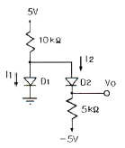
- D1 : OFF, D2 : OFF
- D1 : OFF, D2 : ON
- D1 : ON, D2 : OFF
- D1 : ON, D2 : ON
(정답률: 59%)
47. 다음과 같은 1[MHz]의 수정발진기 출력을 펄스 정형회로(Pulse shaper)를 거쳐 구형파로 바꾼 후 250[Hz]의 클럭 주파수를 만들고자 한다. 블록 A에 카운터를 설계하여 분주하는 경우 최소 몇 개의 플립플롭이 필요한가?
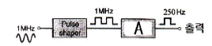
- 10개
- 11개
- 12개
- 13개
(정답률: 42%)
48. FM 변조 방식에서 변조지수가 6이고, 신호 주파수가 10[kHz]일 때 점유주파수 대역폭은 몇 [kHz]인가?
- 60[kHz]
- 70[kHz]
- 120[kHz]
- 140[kHz]
(정답률: 15%)
49. 집적회로의 종류 중 능동소자에 의한 분류에서 바이폴라 소자에 포함되지 않는 것은?
- TTL
- HTL
- DTL
- CMOS
(정답률: 60%)
50. 트랜지스터의 컬렉터 누설전류가 주위 온도변화로 1.2[μA]에서 239.2[μA]로 증가되었을 때 컬렉터의 전류변화가 1[mA]이라면 안정도 계수 S는?
- 1
- 2.2
- 4.2
- 6.3
(정답률: 60%)
51. 베이스변조와 비교하여 컬렉터변조회로의 특징으로 적합하지 않은 것은?
- 조정이 어렵다.
- 변조효율이 좋다.
- 대전력 송신기에 적합하다.
- 높은 변조도에서 일그러짐이 적다.
(정답률: 39%)
52. 지연시간이 80[ns]인 플립플롭을 사용한 5단의 리플 카운터의 최고 동작주파수는 몇 [MHz]인가?
- 12.5[MHz]
- 2.5[MHz]
- 5[MHz]
- 10[MHz]
(정답률: 34%)
53. 듀티 사이클(Duty Cycle)이 0.1이고, 주기가 30[μs]인 펄스의 폭은 몇 [μs]인가?
- 0.3[μs]
- 1[μs]
- 3[μs]
- 10[μs]
(정답률: 42%)
54. 다음 중 수정발진자에 대한 설명으로 적합하지 않은 것은?
- 수정편은 압전기 현상을 가지고 있다.
- 수정편은 Q가 5000 정도로 매우 높다.
- 발진주파수는 수정편의 두께와 무관하다.
- 수정편은 절단하는 방법에 따라 전기적 온도특성이 달라진다.
(정답률: 67%)
55. 다음 연산증폭기 회로에서 저항 Rf 양단에 걸리는 전압 Vf=(25000 If2+50 If+3)[V]의 관계가 있을 때 출력 전압 Vo는?
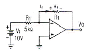
- -3[V]
- -3.2[V]
- -4.1[V]
- -5.8[V]
(정답률: 50%)
56. fT가 125[MHz]인 트랜지스터가 중간 주파수 영역에서 전압이득이 26[dB]인 증폭기로 사용될 때 이상적으로 이룰 수 있는 대역폭은 몇 [MHz]인가?
- 3.5[MHz]
- 6.25[MHz]
- 9.45[MHz]
- 12.5[MHz]
(정답률: 50%)
57. 다음 부궤환 연산증폭기 회로에서 궤환율 β는?
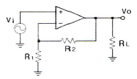
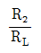
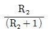
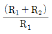
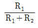
(정답률: 28%)
58. 다음 그림에서 K=60이다. 이 궤환시스템의 폐루프 이득(closed loop gain)은 얼마인가?
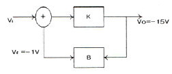
- 6
- 12
- 20
- 48
(정답률: 30%)
59. 다음과 같은 부궤환 증폭기에서 출력 임피던스는 궤환이 없을 때에 비하여 어떻게 변하는가?
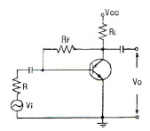
- 감소한다.
- 증가한다.
- hoe배가 된다.
- 변화가 없다.
(정답률: 28%)
60. 트랜지스터의 컬렉터 누설 전류가 주위 온도 변화로 1.2[μA]에서 151.2[μA]로 증가되었을 때 컬렉터 전류는 12[mA]에서 12.6[mA]로 변화하였다면 안정도 계수 S는?
- 2.5
- 3.2
- 4
- 5
(정답률: 40%)
4과목: 물리전자공학
61. Fermi-Dirac 분포와 Maxwell 분포에 대한 설명 중 옳지 않은 것은?
- Fermi-Dirac 분포는 고체 내의 전자에너지 및 속도 분포에 관한 것이다.
- Maxwell의 속도 분포 법칙은 기체의 분자에 대한 것이다.
- Fermi-Dirac의 분포와 기체에 관한 Maxwell 분포의 차이는 기체 분자의 에너지가 양자화 되어 있기 때문이다.
- 만일 전자의 에너지가 양자화 되어 있지 않다면 Fermi-Dirac 분포의 최대는 Maxwell 기체의 30000K에서의 최확치에 해당될 것이다.
(정답률: 20%)
62. 인공위성 등에 사용되는 태양전지는 반도체의 무슨 현상을 이용한 것인가?
- 광기전력 효과
- 광도전 효과
- 광전자 방출 효과
- 루미네센스 효과
(정답률: 34%)
63. 다음 중 터널다이오드(Tunnel Diode)의 V-I 특성을 나타낸 것은?
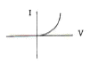
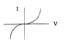
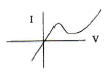
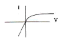
(정답률: 54%)
64. 전계의 세기가 E=100[V/m]인 전계 중에 놓인 전자에 가해지는 전자의 가속도는? (단, 전하량 : 1.602×10-19[C], 전자의 질량은 9.11×10-31[kg]이다.)
- 5.82×1013[m/s]
- 1.62×1013[m/s]
- 5.93×1013[m/s]
- 1.75×1013[m/s]
(정답률: 64%)
65. 수소 원자에서 원자핵 주위를 돌고 있는 전자가 에너지준위 E1(=-5.14×10-12[erg]) 상태에서, 에너지준위 E2(=-21.7×10-12[erg]) 상태로 천이될 때 내는 빛의 진동수는 약 얼마인가? (단, 플랑크 상수 h=6.63×10-27[ergㆍsec]이다.)
- 1.2×105/sec
- 2.5×1015/sec
- 5.03×1016/sec
- 10.3×1022/sec
(정답률: 50%)
66. 다이오드 불순물의 농도가 영향을 주는 요소가 아닌 것은?
- 유지전류
- 접촉전위차
- 직렬저항
- 항복전압
(정답률: 32%)
67. Fermi 준위 E=EF에서의 Fermi-Dirac의 확률 함수 f(E)의 값은?
- 1/3
- 1/2
- 1
- 2
(정답률: 64%)
68. 일반 BJT와 비교한 MOSFET의 장점으로 옳지 않은 것은?
- 구조가 간단하다.
- 소비전력이 적다.
- 고속 스위칭 동작에 적합하다.
- 높은 집적도의 집적회로에 적합하다.
(정답률: 54%)
69. 정상 동작 상태로 바이오스된 NPN 트랜지스터에 컬렉터 접합을 통과하는 주된 전류는?
- 확산 전류
- 정공 전류
- 트리프트 전류
- 베이스 전류와 같다.
(정답률: 54%)
70. 다음 중 직접 재결합은?
- 전자가 직접 정공을 채우는 것
- 재결합 중심을 중계로 일어나는 것
- 결정 표면에서 전자와 정공이 결합하는 것
- 재결합 대상이 가까이 올 때까지 강하게 구속되는 것
(정답률: 39%)
71. MOSFET의 전류-전압특성 곡선이 다음 그림과 같은 기울기를 갖는 이유는?
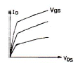
- MOSFET가 선형영역에서 동작하기 때문이다.
- MOSFET가 항복영역에서 동작하기 때문이다.
- 채널길이 변조효과 때문이다.
- 채널폭 변조효과 때문이다.
(정답률: 19%)
72. 온도가 상승하면 불순물 반도체의 페르미 준위는?
- 전도대 쪽으로 접근한다.
- 가전대 쪽으로 접근한다.
- 금지대 중앙에 위치한다.
- 금지대 중앙으로 접근한다.
(정답률: 25%)
73. 이미터 전류를 1[mA] 변화시켰더니 컬렉터 전류의 변화량이 0.98[mA]이었다. 이 트랜지스터의 전류 증폭률 β는?
- 98
- 99
- 48
- 49
(정답률: 44%)
74. 홀(Hall) 계수에 의해서 구할 수 있는 사항을 가장 잘 표현한 것은?
- 캐리어의 종류만을 구할 수 있다.
- 캐리어 농도와 도전율을 알 수 있다.
- 캐리어 종류와 도전율을 구할 수 있다.
- 캐리어의 종류, 농도는 물론 도전율을 알 경우 이동도도 구할 수 있다.
(정답률: 65%)
75. 접합형 전계효과 트랜지스터의 핀치오프 상태에 대한 설명으로 적합하지 않는 것은?
- 드레인 전류가 최대가 되는 상태
- 채널의 저항이 최대가 되는 상태
- 채널의 단면적이 최소가 되는 상태
- 채널이 끊기는 상태
(정답률: 47%)
76. 공간전하영역이 반도체내에만 존재하고, 금속 내에서 존재하지 않는 이유는?
- 반도체 내의 전하밀도가 매우 크기 때문에
- 공간전하를 유지하는 힘이 반도체가 금속에 비해서 매우 크기 때문에
- 금속내의 전하밀도가 매우 작기 때문에
- 공간전하를 유지하는 힘이 금속이 반도체에 비해서 매우 크기 때문에
(정답률: 47%)
77. 9.5×104[m/s]의 속도로 운동하는 수소원자의 드브로이(de Broglie)파의 파장은? (단, 수소원자의 질량은 1.67×10-24[kg]이고, Plank 상수 h는 6.62×10-34[Jㆍs]이다.)
- 2.08×10-15[m]
- 4.17×10-15[m]
- 3.48×10-16[m]
- 7.25×10-16[m]
(정답률: 50%)
78. 다음 중 캐리어의 확산 거리에 대한 설명으로 옳은 것은?
- 확산계수와는 무관하다.
- 캐리어의 이동도에만 관계있다.
- 캐리어의 수명시간에만 관계있다.
- 캐리어의 수명시간과 이동도에 관계있다.
(정답률: 54%)
79. 열전자를 방출하고 있는 금속 표면에 전기장을 가하면 전자방출 효과가 증가하는 현상을 무엇이라 하는가?
- 지백 효과(Seeback effect)
- 톰슨 효과(Thomson effect)
- 펠티어 효과(Peltier effect)
- 쇼트키 효과(Schottky effect)
(정답률: 50%)
80. 어느 열음극의 일함수(work function)의 값이 1/2로 되면 열전자 전류밀도는 어떻게 되는가?
(정답률: 16%)
5과목: 전자계산기일반
81. 2의 보수로 표현된 값들이 A, B 레지스터에 저장되어 있다. 산술적 비교를 하였을 경우 옳은 것은? (단, 16진수임)
- A가 크다.
- B가 크다.
- A와 B가 같다.
- 비교 불능
(정답률: 54%)
82. 데이터를 디스크에 분산하여 저장하는 기술을 무엇이라 하는가?
- 디스크 인터리빙
- 세그멘트
- 블록킹
- 페이징
(정답률: 50%)
83. 어셈블리 언어(assembly language)의 설명으로 틀린 것은?
- 기계어를 사람이 이해할 수 있도록 만든 저급 수준의 언어이다.
- 컴퓨터 하드웨어에 대한 충분한 지식이 없어도 프로그램을 작성하기가 용이하다.
- 각 컴퓨터는 시스템별로 고유의 어셈블리 언어를 갖는다.
- 하드웨어와 밀접한 관계를 갖고 있으므로 하드웨어를 효율적으로 사용할 수 있다.
(정답률: 50%)
84. 인터럽트가 발생하였을 때 반드시 저장할 필요가 없는 것은?
- 프로그램의 크기
- 프로그램 카운터의 값
- 프로세서의 상태 조건 값
- 프로세서 내의 레지스터 내용
(정답률: 58%)
85. 컴퓨터가 8비트 정수 표현을 할 때, 10진수 -25를 부호와 2의 보수로 표현하면?
- 01100110
- 11100111
- 01100111
- 11100110
(정답률: 40%)
86. 8×1 멀티플렉서를 만들려면 몇 개의 2×1 멀티플렉서가 필요한가?
- 8
- 7
- 5
- 4
(정답률: 0%)
87. 주소 지정 방식을 자료에 접근하는 방법에 따라 접근할 때 이에 속하지 않는 것은?
- 직접 주소(direct addressing)
- 즉각 주소(immediate addressing)
- 간접 주소(indirect addressing)
- 상대 주소(relative addressing)
(정답률: 19%)
88. 마이크로프로세서의 속도를 프린터와 맞추기 위한 방법으로 마이크로프로세서와 입ㆍ출력장치를 동기화시키는 입ㆍ출력 제어방식은?
- decoding method
- spooling
- daisy chain
- handshaking
(정답률: 17%)
89. 프로그램카운터와 명령어주소가 더해져서 유효주소가 결정되는 주소 지정 방식은?
- 상대 주소 모드
- 직접 주소 모드
- 인덱스 레지스터 주소 모드
- 베이스 레지스터 주소 모드
(정답률: 54%)
90. Stack 구조에 대하여 올바르게 설명한 것은?
- 1-주소지정 방식
- 서브루틴 호출 수 Return 주소를 저장하기 위한 메모리
- FIFO 구조
- PUSH 명령에 의해서 데이터를 꺼낸다.
(정답률: 29%)
91. 인터럽트 처리 과정 중 인터럽트 장치를 소프트웨어에 의하여 판별하는 방법은?
- 스택
- 벡터 인터럽트
- 폴링
- 핸드쉐이킹
(정답률: 37%)
92. 기억장치의 성능을 좌우하는 것이 아닌 것은?
- 접근시간
- 내부버스
- 기억용량
- 비트가격
(정답률: 17%)
93. C언어에서 사용하는 논리 연산자들 중 1의 보수 연산과 가장 관련 깊은 연산자는?
- &
- |
- ^
- ~
(정답률: 25%)
94. 부동소수점 연산에서 정규화의 이유로 가장 타당한 것은?
- 지수의 값을 크게 하기 위해서이다.
- 수의 정밀도를 높이기 위함이다.
- 부호 비트를 생략하기 위함이다.
- 가수부의 비트수를 줄이기 위함이다.
(정답률: 31%)
95. DMA(Direct Memory Access)에 대한 설명 중 옳지 않은 것은?
- 주기억장치와 입출력장치 간에 CPU를 통하지 않고 직접 접속으로 고속 데이터 전송이 가능하다.
- DMA 입출력을 수행할 때는 CPU가 다른 일을 수행할 수 있다.
- 입출력장치와 주기억장치 사이에 독립적인 데이터 전송경로를 만들어 데이터를 송수신하다.
- DMA 입출력을 사용하여도 입출력 전송에 따른 CPU 부하를 줄일 수 없다.
(정답률: 47%)
96. 레이스(race) 현상을 방지하기 위하여 사용되는 것은?
- JK 플립플롭
- RS 플립플롭
- T 플립플롭
- M/S 플립플롭
(정답률: 40%)
97. 프로그램 카운터로부터 다음에 실행할 명령의 주소를 읽어서 명령어를 메모리로부터 꺼내오는 명령 사이클은?
- Fetch cycle
- Execution cycle
- Indirect cycle
- Interrupt cycle
(정답률: 알수없음)
98. shift 연산에서 binary number 4번 shift-left한 경우의 number는?
- number × 4
- number × 16
- number ÷ 4
- number ÷ 16
(정답률: 50%)
99. n 비트로 부호화된 2진 정보를 최대 2n개의 출력으로 변환하는 조합 논리회로는?
- Encoder
- Decoder
- Multiplexer
- Demultiplexer
(정답률: 38%)
100. 원시프로그램을 목적프로그램으로 변화시켜 주는 것은?
- linker
- loader
- compiler
- editor
(정답률: 64%)